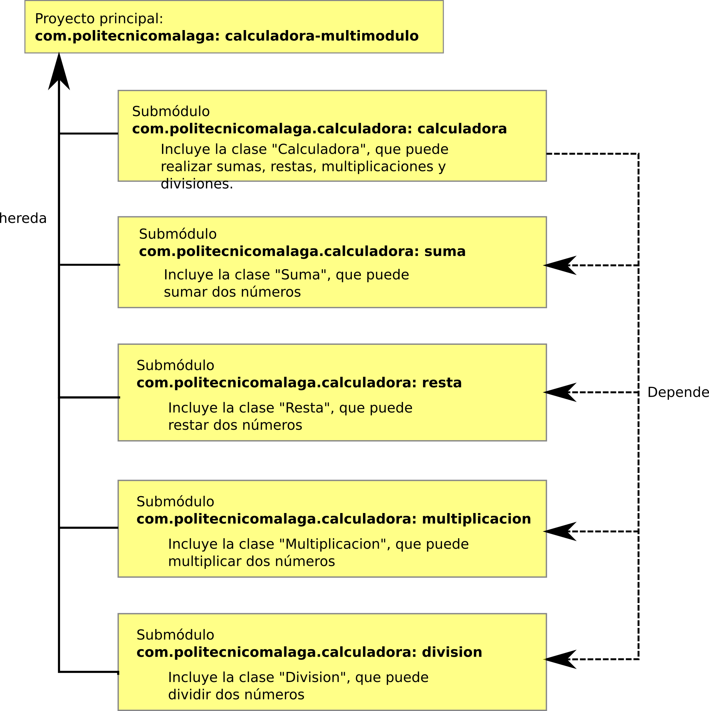

¿Qué es Maven?
"Apache Maven is a software project management and comprehension tool. Based on the concept of a project object model (POM), Maven can manage a project's build, reporting and documentation from a central piece of information."
Apache Foundation
La instalación de Maven en Windows, Linux y Mac queda descrita en https://www.baeldung.com/install-maven-on-windows-linux-mac
Entrar dentro de la carpeta del proyeto.
Se crea una carpeta llamada target con la compilación. En su interior se encontrarán los archivos .class compilados. Para ejecutarlo, nos colocamos en la carpeta target/classes y ejecutamos el siguiente comando:
Entrar dentro de la carpeta del proyecto.
Se crea un archivo jar dentro de la carpeta target. En su interior se pueden encontrar los archivo .jar. Para ejectuar directamente un .jar se puede usar el siguiente comando:
IntelliJ permite crear archivos .jar a partir de un proyecto cómodamente del modo especificado en https://www.jetbrains.com/help/idea/packaging-a-module-into-a-jar-file.html. También es posible incluir un archivo .jar como dependencia con IntelliJ https://www.jetbrains.com/help/idea/working-with-module-dependencies.html#.
La principal diferencia que plantea Maven en este sentido, es que las dependencias están centralizadas en un repositorio, y simplica la gestión de los .jar.
Actividad 1. Crear a partir de un proyecto Maven un archivo .jar. En dicho archivo .jar se incluirá una clase llamada "Suma", que incluye un método llamado "sumar", capaz de devolver la suma de dos números. Después, incluye la dependencia el proyecto y utiliza la clase "Suma" para realizar la suma de dos números.
Maven crea un repositorio local, donde se instalan los módulos.
Por ejemplo, si utilizamos el proyecto commons-io de Apache, obtendríamos los siguientes ficheros:
Se añade el módulo en el repositorio local
Se generan 4 archivos .jar en la carpeta target del proyecto:
Dentro del acarpeta target:
Con Maven podemos obtener el arbol de dependencias de un proyecto. Para ello, se ejecuta el siguiente comando:
El árbol de dependencias se muestra del siguiente modo para el proyecto commons-io es:
Sin embargo, si buscamos en el archivo pom.xml la dependencia org.objenesis, veremos que no aparece por ninguna parte. Esto es así, porque es una dependencia transitiva.
En el POM de commons-collections se especifica en la sección dependencies:
El resto de dependencias son transitivas y se especifican en los archivos POM de los módulos anteriores.
En Linux y MacOS, el repositorio local está en ~/.m2/repository/. En Windows está en C:\Users\{tu-usuario}\.m2\repository. Esta ubicación se puede cambiar en la configuración de Maven.
Maven tiene un archivo de configuración llamado settings.xml. En linux se encuentra en /etc/maven y viene determinado por la variable M2_HOME. En el archivo settings.xml la ubicación del repositorio local se especifica en la etiqueta <localRepository
Cada vez que Maven descarga algo (por compilado, limpiado, etc.) se añaden los paquetes en este repositorio. La estructura de carpetas del repositorio es:
Para añadir el módulo *Maven* con el que estamos trabajando al repositorio, usamos el comando mvn install
Sea el proyecto commons-io
target y coloca en ella los archivos .classtargetclass y comprimirlo todo junto como un zip (renombrado a jar). Maven gestiona las dependencias.Dar los siguientes pasos puede ser muy aclaratorio sobre lo que Maven hace:
commons-iocommons-io y ejecutar el comando mvn clean (la carpeta target es eliminadamvn compile, con lo que se crea la carpeta target. Si entramos dentro veremos que la carpeta classes ha sido creada.mvn package. Este comando pasa por la fase test (ejecutando los tests) y después empaqueta el proyecto en archivos .jarhttps://mvnrepository.com/
Define de manera estándar el ciclo de vida de cada módulo Maven. Cuando no se usa Maven, las librerías hay que guardarlas en el propio repositorio del proyecto, con todos los inconvenientes que esto tiene. Cuando se utiliza una librería que a su vez usa otra librería, no tenemos que preocuparnos, porque Maven lo resuelve.
POM básico:
El POM funciona mediante la herencia (del superPOM). Para obtener el POM efectivo (incluyendo las opciones por defecto) se puede ejecutar el siguiente comando:
El resultado se puede redireccionar.
Crea un proyecto maven vacío, utilizando el comando siguiente:
Después obtén el POM efectivo.
El archivo pom.xml tiene muchas secciones con diferentes opciones cada una. En el siguiente gráfico sepuede ver un resumen:
Para conocer en detalle cada sección, se puede consultar en http://maven.apache.org/pom.html.
Los requisitos mínimos de un POM son los siguientes:
modelVersion: debe estar a 4.0.0 según la recomendación de ApachegroupIdartifactIdversion: versión del proyectoUn ejemplo de pom mínimo es el siguiente:
En el archivo pom.xml podemos especificar las dependencias con otros proyectos. La sintaxis es la siguiente:
En siguiente ejemplo, vamos a crear dos proyectos. Uno de ellos se llamará com.politecnicomalaga.modulo y el otro com.politecnicomalaga.app. El proyecto com.politecnicomalaga.modulo incluirá una clase llamada Suma con el método sumar(int a, int b). El proyecto com.politecnicomalaga.app dependerá del primero y usará la clase Suma.
com.politecnicomalaga.moduloCreamos el proyecto:
Después, en la carpeta src/main/java/com/politecnicomalaga/ creamos la clase Suma con el método sumar
Finalmente, compilamos, empaquetamos e instalamos en proyecto en el repositorio:
En este punto, el proyecto com.politecnicomalaga.modulo ya está instalado en el repositorio local.
com.politecnicomalaga.appVamos a crear el proyecto com.politecnicomalaga.app mediante el comando siguiente:
Una vez creado el proyecto, añadimos la dependencia en el archivo pom.xml:
Ahora, Maven incluye la librería .jar entre las dependencias del proyecto, de forma que ya se puede utilizar la clase Suma
Maven proporciona más de un método para incluir un archivo .jar, cuyas fuentes no tenemos, en un proyecto.
Para añadir el archivo .jar en el repositorio local Maven, se debe usar la función install:install-file del siguiente modo:
En el comando anterior no se ha especificado groupId, artifactId ni version. Si se desea, esta información puede proporcionarse desde el mismo comando:
pacakging indica el tipo de empaquetamiento (jar, zip, war, etc.)De este modo, se suministra la información necesaria para incluir la dependencia.
Crea un nuevo proyecto, llamado Aritmetica que incluye una clase llamada Multiplicacion. Después genera un archivo .jar. Finalmente instala el archivo .jar en el repositorio local de Maven utilizando el procedimiento anteriormente explicado.
Una vez hecho esto, crea un nuevo proyecto llamado TablaMultiplicar que tenga como dependencia al proyecto Aritmetica. Incluye el proyecto en el POM, y muestra por pantalla la tabla de multiplicar de un número utilizando la clase Multiplicacion.
Si sabemos donde está ubicado el archivo .jar, podemos hacer referencia a él en una sección <dependency>, añadiendo el <scope> system. El lugar donde debería colocarse el archivo .jar es en el mismo proyecto, dentro de la carpeta lib. La especificaciónd de la dependencia se puede hacer del siguiente modo:
Actividad. Vuelve a repetir el ejercicio anterior. Antes de empezar elimina el archivo .jar del repositorio local. Para ello puedes utilizar el comando siguiente:
Después utiliza el archivo .jar, colocándolo en la carpeta lib del proyectoy y especifica la dependencia en el POM del proyecto Multiplicacion. Finalmente comprueba que el proyecto sigue funcionando.
Se puede utilizar GitHub como repositorio. Primero vamos a necesitar tener nuestro proyecto en GitHub. Las versiones distribuidas por Maven deben contar con tags para que sean identificables. Esto es algo que se puede hacer desde el repositorio local (con git), o bien desde el mismo GitHub.
Una vez que ya está subido a GitHub el proyecto y las tags asignadas, vamos a usar el servicio JitPack. En la página del servicio debemos pegar la URL del repositorio de GitHub, y se nos ofrecerán las opciones de importación del proyecto.
Nexus Repository (de Sonatype) es un servicio que se puede usar como repositorio privado en una organización. Se puede instalar en un servidor de tipo *N*X, Windows u OS X. Se puede descargar desde aquí. Algunos requisitos para instalar Nexus son:
¿Qué hacer si utilizamos una versión diferente a JAVA 8?
No es necesario cambiar la versión de JDK en el equipo. Basta con instalar la versión de JDK deseada (en este caso la 8), y editar el script de ejecución /opt/nexus/nexus-3.x.x/bin/nexus. En dicho script se puede cambiar la opción INSTALL4J_JAVA_HOME_OVERRIDE. Así, la instalación de JAVA 8 está en /usr/lib/jvm/java-1.8.0-openjdk-amd64/, la variable deberá tener el siguiente aspecto:
Para instalar Nexus en Linux, se deben seguir los siguientes pasos:
tar.gz. Los comandos a ejecutar son los siguientes:A partir de este momento, el servicio Nexus estará corriendo y escuchando en el puerto especificado en el archivo /opt/nexus/nexus-3.21.1-01/etc/nexus-default.properties, que por defecto es 8081.
Nexus incluye repositorios por defecto que son suficientes para empezar a trabajar. Estos repositorios son los siguientes:
maven-public que incluye los dos repositorios anteriores. El único propósito de los grupos, es organizativo.En primer lugar hay que añadir lo siguiente en el archvio ~/.m2/settings.xml. Esto sirve para configurar las credenciales que se utilizarán para utilizar el repositorio
Para configurar los proyectos en desarrollo, será necesario añadir lo siguiente en el archivo pom.xml:
Y si también se desea publibar el proyecto en el repositorio, se debe añadir lo siguiente:
Si se desea publicar un proyecto en el repositorio, debemos llegar a la fase deploy.
Es una buena práctica ejectuar Nexus como un cierto usuario específico para el servicio. El usuario debería llamarse nexus y debería tener acceso a una shell. Para ello debemos seguir los siguientes pasos:
El usuario nexus debe tener como directorio home aquel en que se encuentra instalado el servicio:
A continuación debemos configurar el propietario del directorio, en nuestro caso nexus:
Finalmente, configuramos el servicio nexus para que se ejecute con los permisos del usuario nexus. Para ello, editamos el archivo /opt/nexus/nexus-3.x.x-x/bin/nexus y editamos la línea que contiene el parámetro run_as_user para que quede del siguiente modo:
Para terminar, debemos ejecutar el servicio:
Actividad 1. Crea un proyecto de Maven. El proyecto debe incluir como dependencia a MySQL Connector/J en el archivo pom.xml. El proyecto debe además incluir una clase llamada Copyright con un método llamado getText que devuelve una cadena de texto de copyright de un proyecto, similar a la siguiente, pero con tus datos incluidos:
Una vez terminado, debes subir el proyecto a GitHub.
Objetivo del ejercicio: Utilizando el proyecto de otro compañero, emplea jitpack para añadir el proyecto anterior como dependencia. Escribe el código necesario para mostrar por pantalla su texto de Copyright.
Actividad 2. Repite el ejercicio, pero utilizando el servicio Nexus en este caso.
Actividad 3. Consulta en https://blog.sonatype.com/using-nexus-3-as-your-repository-part-1-maven-artifacts, para entender cómo puedes crear tus propios repositorios (además de los definidos por defecto). Crea tus propios repositorios y repite el ejercicio, desplegando en este caso el artefacto en el repositorio que has definido manualmente.
Maven permite los proyectos multimódulo. Este tipo de proyectos tiene una estructura jerárquica en la que hay, al menos, un proyecto padre. El proyecto padre incluye un POM especial, llamado POM padre. El resto de módulos, incluyen un POM que hace referencia al POM padre. Aunque sólo existe un proyecto principal, pueden existir sub-módulos que hagan a su vez de proyectos padre de otros submódulos.
Hasta ahora hemos visto como agregar dependencias en el POM, para poder utilizar otros artefactos. Sin embargo, a veces es deseable mantener una alta cohesión entre proyectos que están muy relacionados. Cuando esto es así, además de agregar las dependencias en el POM, los proyectos multi-módulo permiten crear una estructura jerárquica entre módulos. Los proyectos multimódulo permiten, además, aplicar las reglas de herencia entre los diferentes POM.
En el ejemplo que se va a mostrar a continuación, existe un proyecto llamado saludos-internacionales que aglutina diferentes módulos relacionados con saludos de diferentes paises. La estructura que tendrá el proyecto será la siguiente
En el siguiente vídeo podremos ver como se crea un proyecto multimódulo como el descrito en la imagen anterior. Ver vídeo
Actividad 4. Crea un proyecto multimódulo llamado Calculadora. La estructura del proyecto será la siguiente:
Una vez que el proyecto esté completo, asegúrate de que la calculadora puede realizar sumas, multiplicaciones, restas y divisiones. Para ello, utiliza las clases Suma, Resta, Multiplicacion y Division en el método main del módulo Calculadora.
Finalmente despliega el proyecto en tu servidor Nexus.
En https://www.jetbrains.com/help/idea/packaging-a-module-into-a-jar-file.html se puede encontrar información sobre cómo crear un .jar en IntelliJ